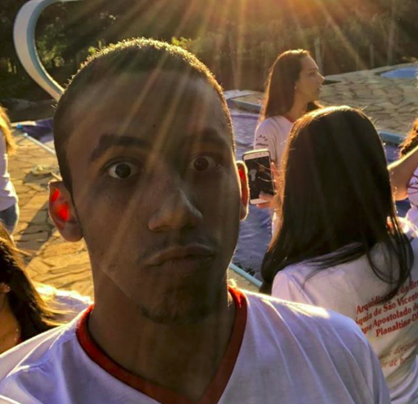
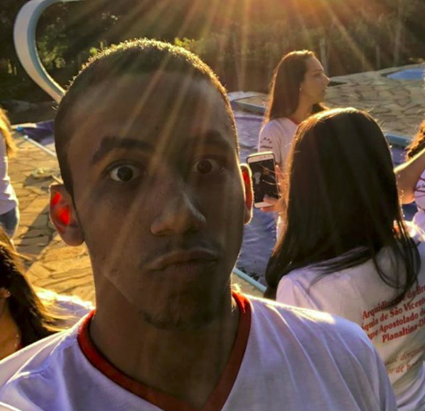

Thiago Ferreira
 

Olá, sou acessor da diretoria de negócios da orc'estra, e gamificação para mim é uma forma de deixar as pessoas mais a vontade para fazer algo que elas sempre fizeram. É tornar interessante uma tarefa repetitiva e rotineira, assim as pessoas que vão fazer essas tarefas vão estar mais motivadas e felizes.